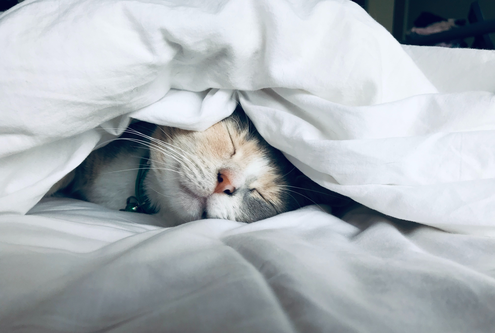

Blog 1
Published 01-04-2020
It was a cold morning of the early spring, and we sat after breakfast on either
side of a cheery fire in the old room at Baker Street. A thick fog rolled down between the
lines of dun-coloured houses, and the opposing windows loomed like dark, shapeless blurs through
the heavy yellow wreaths. Our gas was lit and shone on the white cloth and glimmer of china and
metal, for the table had not been cleared yet. Sherlock Holmes had been silent all the morning,
dipping continuously into the advertisement columns of a succession of papers until at last, having
apparently given up his search, he had emerged in no very sweet temper to lecture me upon my literary
shortcomings.

Blog 2
Published 08-04-2020
"At the same time," he remarked after a pause, during which he had sat puffing at his long
pipe and gazing down into the fire, "you can hardly be open to a charge of sensationalism, for out of
these cases which you have been so kind as to interest yourself in, a fair proportion do not treat of
crime, in its legal sense, at all. The small matter in which I endeavoured to help the King of Bohemia,
the singular experience of Miss Mary Sutherland, the problem connected with the man with the twisted lip,
and the incident of the noble bachelor, were all matters which are outside the pale of the law. But in
avoiding the sensational, I fear that you may have bordered on the trivial."
Blog 3
Published 15-04-2020
It was a few weeks before my own marriage, during the days when I was still sharing rooms with
Holmes in Baker Street, that he came home from an afternoon stroll to find a letter on the table waiting for
him. I had remained indoors all day, for the weather had taken a sudden turn to rain, with high autumnal winds,
and the Jezail bullet which I had brought back in one of my limbs as a relic of my Afghan campaign throbbed with
dull persistence. With my body in one easy-chair and my legs upon another, I had surrounded myself with a cloud
of newspapers until at last, saturated with the news of the day, I tossed them all aside and lay listless,
watching the huge crest and monogram upon the envelope upon the table and wondering lazily who my friend's
noble correspondent could be.

Blog 4
Published 22-04-2020
Holmes laughed softly to himself and stretched himself out upon the cushioned seat. "Both you and
the coroner have been at some pains," said he, "to single out the very strongest points in the young man's favour.
Don't you see that you alternately give him credit for having too much imagination and too little? Too little,
if he could not invent a cause of quarrel which would give him the sympathy of the jury; too much, if he evolved
from his own inner consciousness anything so outré as a dying reference to a rat, and the incident of the vanishing
cloth. No, sir, I shall approach this case from the point of view that what this young man says is true, and we
shall see whither that hypothesis will lead us. And now here is my pocket Petrarch, and not another word shall I
say of this case until we are on the scene of action. We lunch at Swindon, and I see that we shall be there in
twenty minutes."

Blog 5
Published 29-04-2020
It was nearly four o'clock when we at last, after passing through the beautiful Stroud Valley, and
over the broad gleaming Severn, found ourselves at the pretty little country-town of Ross. A lean, ferret-like
man, furtive and sly-looking, was waiting for us upon the platform. In spite of the light brown dustcoat and
leather-leggings which he wore in deference to his rustic surroundings, I had no difficulty in recognising
Lestrade, of Scotland Yard. With him we drove to the Hereford Arms where a room had already been engaged for
us.